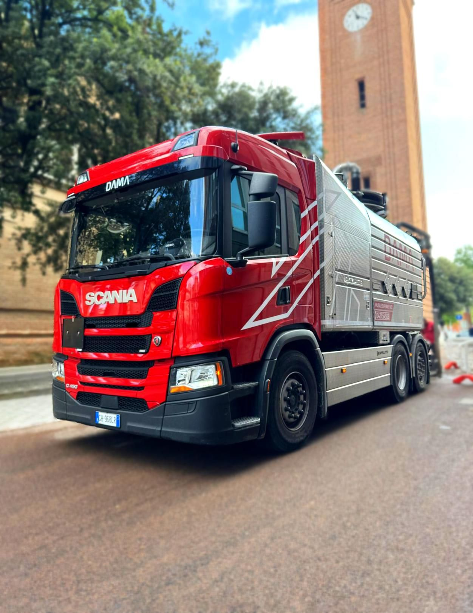
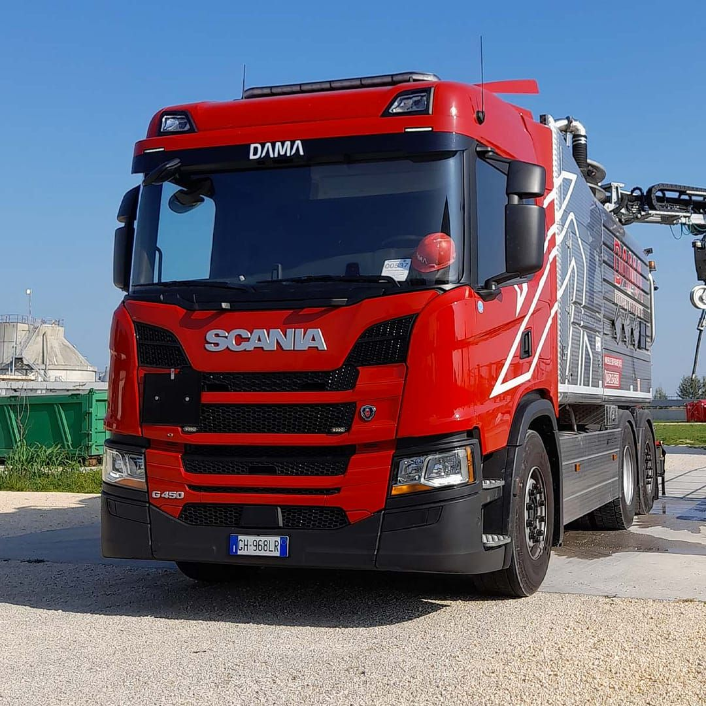
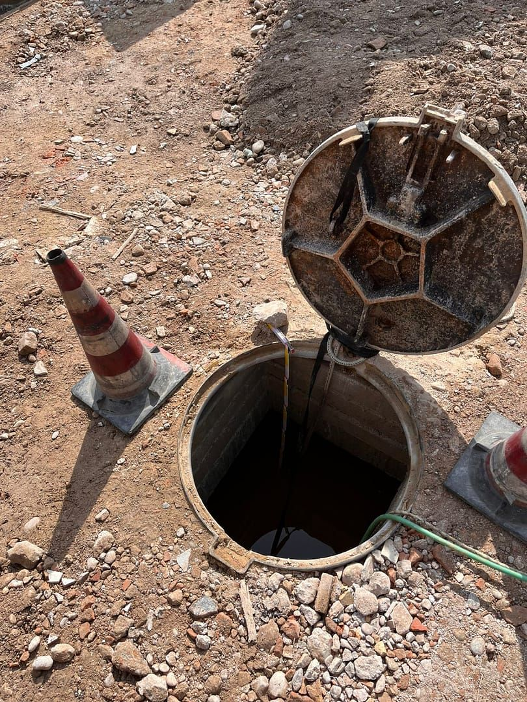
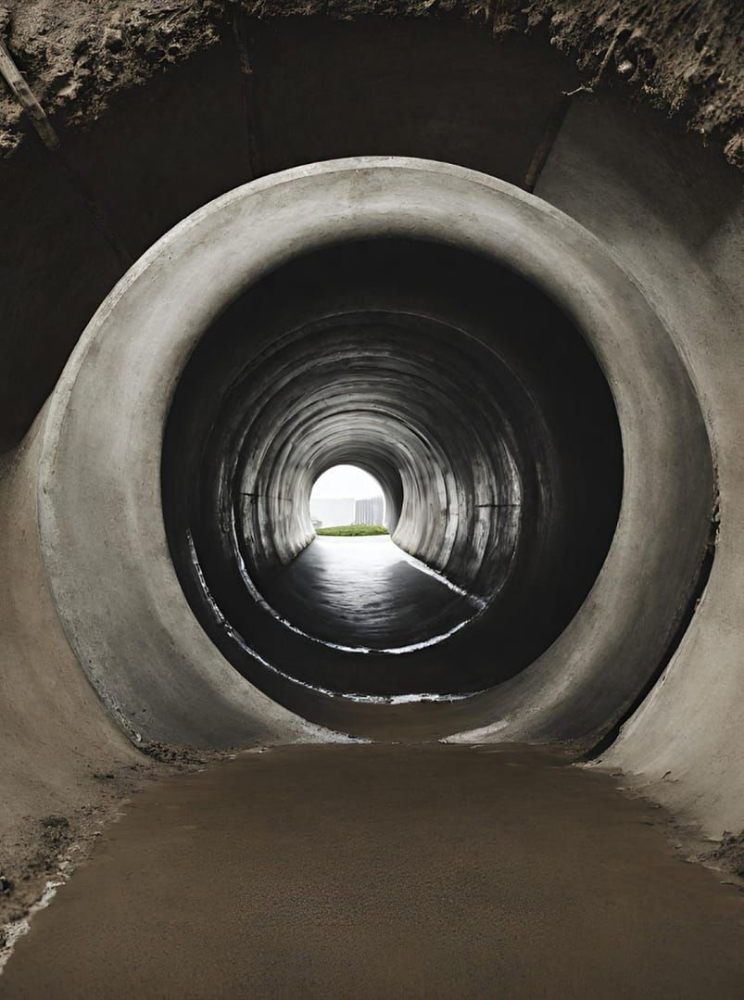
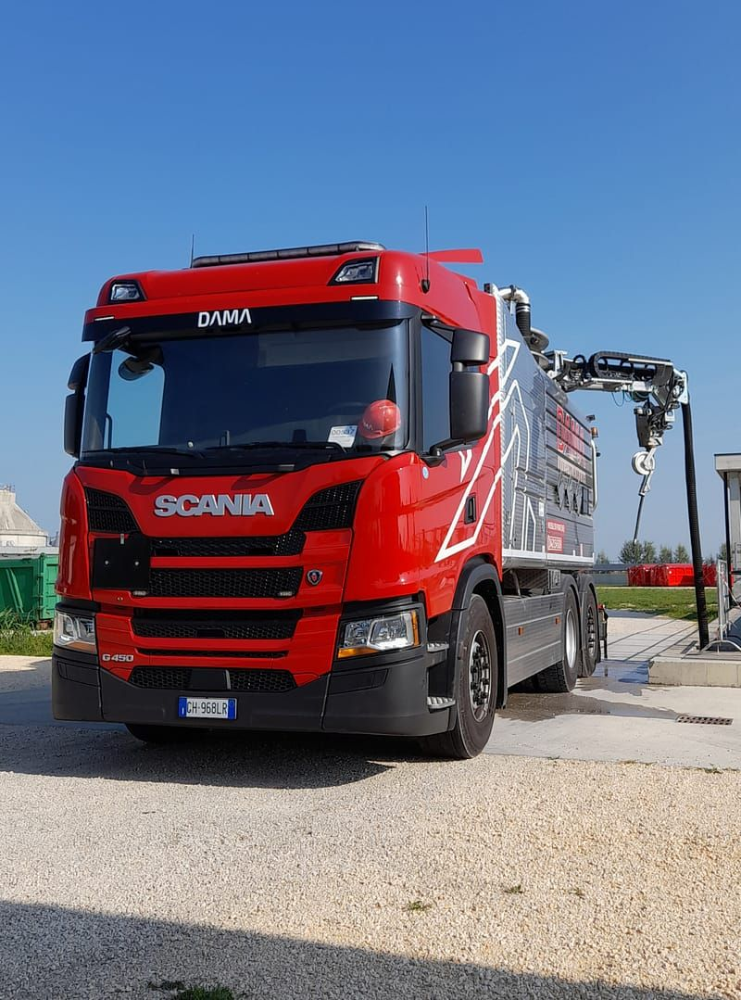
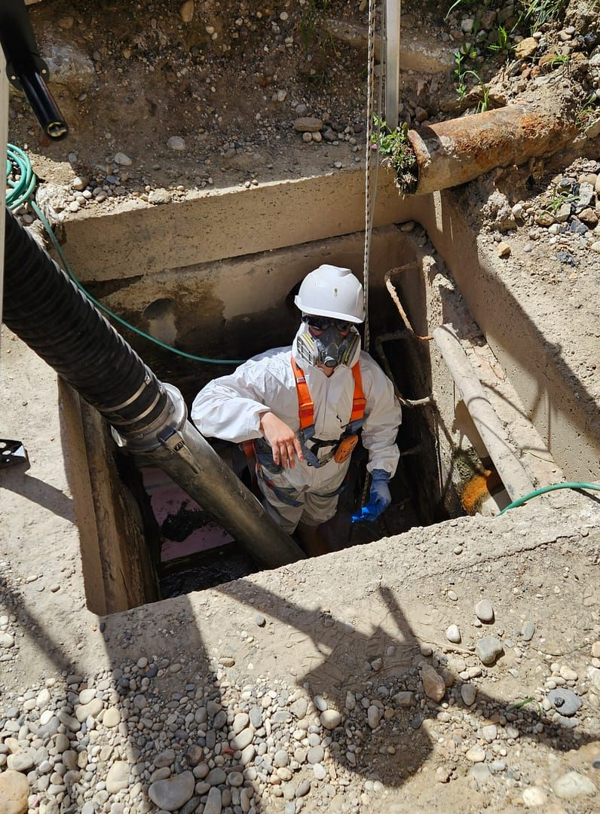

01
Spurghi civili e industriali
Spurgo e pulizia di fosse, pozzetti e condotte, con mezzi attrezzati e smaltimento autorizzato di quanto aspirato.
Anteprima riservata
Il nuovo sito di DAMA Servizi Ecologici
umbra® studio web

Spurghi civili e industriali Noventa di Piave dal 1981
Il tuo problema lo risolviamo noi
L'azienda
Dal 1981 DAMA Servizi Ecologici lavora da Noventa di Piave: spurghi civili e industriali, trasporto rifiuti liquidi e bonifica cisterne, per privati, condomini, aziende ed enti pubblici; provincia di Venezia e Triveneto. Con 1 certificazione a garanzia.

Servizi
01 / 07

Spurgo e pulizia di fosse, pozzetti e condotte, con mezzi attrezzati e smaltimento autorizzato di quanto aspirato.

Trasporto conto terzi con mezzi autorizzati all'Albo Gestori Ambientali.

Bonifiche con piano di intervento, messa in sicurezza dell'area e smaltimento autorizzato.

Ispezione delle condotte con telecamera: si vede il problema prima di scavare.

Pulizia di reti e condotte con getto ad alta pressione e aspirazione.
Spurgo e pulizia di fosse, pozzetti e condotte, con mezzi attrezzati e smaltimento autorizzato di quanto aspirato.
Spurgo e pulizia di fosse, pozzetti e condotte, con mezzi attrezzati e smaltimento autorizzato di quanto aspirato.
Il metodo
Ogni intervento segue lo stesso percorso: tracciabile, documentato, senza passaggi lasciati al caso.
Ci dite dove e cosa: fossa, pozzetto, condotta, urgenza.
Valutiamo accesso, volumi e mezzo adatto.
Aspirazione, lavaggio e, se serve, video-ispezione.
Il refluo va a un impianto autorizzato, con formulario.
Vi restano i documenti di trasporto e smaltimento.
Noventa di Piave · Venezia
Certificazioni
Le certificazioni e le iscrizioni dichiarate dall'azienda, in chiaro, dove un ufficio acquisti le cerca.
Lavora con noi
Mandateci il vostro curriculum: lo leggiamo tutto, e vi richiamiamo.
Contatti
Enti, aziende e privati: indicateci il servizio e la zona, vi rispondiamo con tempi e preventivo.
Anteprima riservata · preparata per DAMA Servizi Ecologici
Abbiamo usato le foto e le informazioni già pubbliche dell'azienda. L'anteprima è gratuita: se vi piace, acconto del 25% e saldo quando il sito è online, con rimborso completo entro 30 giorni dalla messa online. Hosting, dominio, privacy e cookie li gestiamo noi.
umbra® studio web · umbragency.it